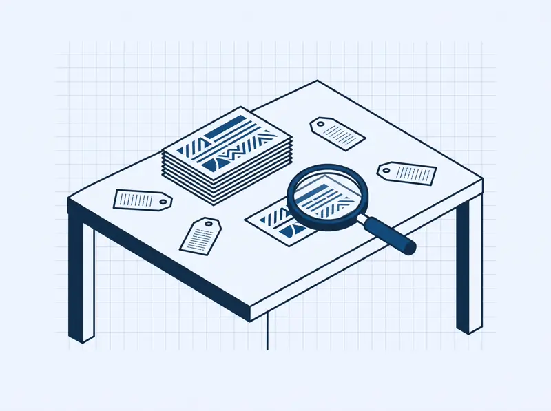
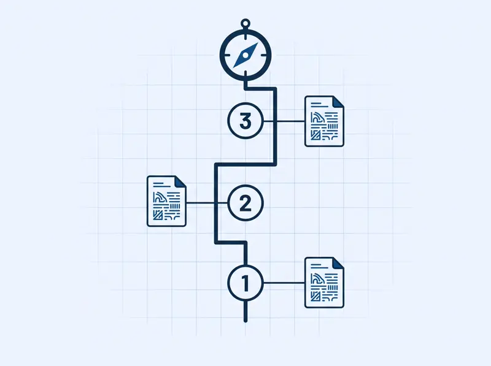

Questões organizadas por assunto
O acervo nasce de provas reais, classificadas por disciplina, assunto e subassunto. Você pratica o que a prova realmente cobra.
Direto ao ponto, sem enrolação
Com base em provas reais organizadas por assunto, receba um roteiro que explica o motivo de cada recomendação e faça simulados como a prova de verdade.
 VouPassar
VouPassar
Seu roteiro
O que estudar agora
Roteiro que se explica
Simulado como a prova
Do que se trata
O VouPassar organiza questões de provas reais por assunto, mostra por que cada tema importa para você e treina no formato da prova — do primeiro diagnóstico à revisão final.

O acervo nasce de provas reais, classificadas por disciplina, assunto e subassunto. Você pratica o que a prova realmente cobra.

Cada recomendação mostra o motivo: seu acerto, erros recentes e peso do assunto. Sem caixa-preta, sem verdade absoluta.
Treine por disciplina ou encare uma edição real completa, com correção e análise por assunto ao final.
Como funciona
Como você pratica
Feedback imediato a cada resposta, com explicação e assunto relacionado.
Clima de prova de verdade: sem resultado parcial, correção só ao final.
Foco nos seus erros, assuntos fracos e questões ainda não dominadas.
Simulados por disciplina ou por edição real — cada edição segue a estrutura da própria prova, nunca um modelo único.
Para quem é
Começamos com provas reais de processos seletivos, organizadas assunto a assunto. A plataforma foi desenhada para crescer como centro de estudos — IFs, ENEM e concursos são a visão de futuro.
EM EXPANSÃO Novas trilhas entram somente com acervo real classificado — nunca como cobertura pronta.
Crie sua conta, faça o diagnóstico e receba seu primeiro roteiro explicado.